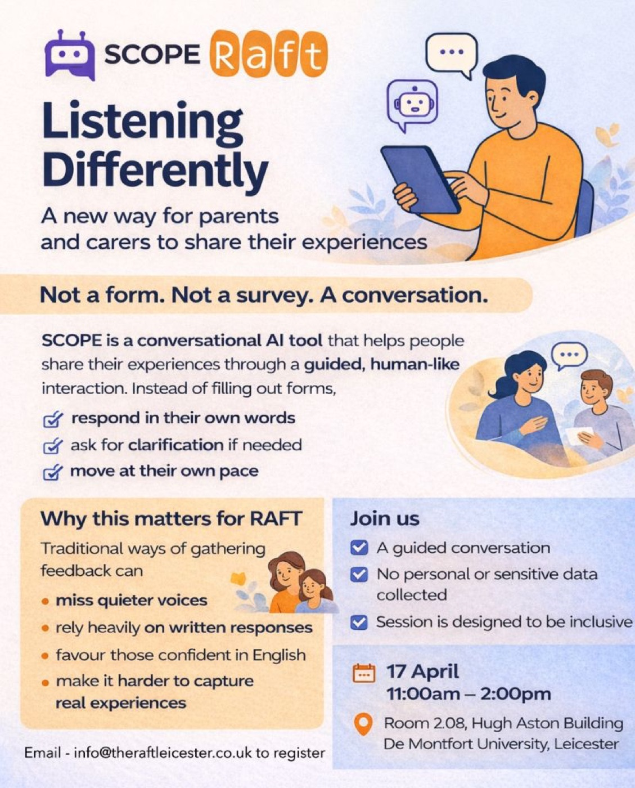

Conversational AI · Inclusion · Live pilot
SCOPE‑AI: Listening Differently
Conversational AI for inclusive feedback, civic engagement and lived experience research
- PartnerRAFT, a Leicestershire charity supporting parents and carers of care‑experienced children
- StatusIn pilot
- FundingDMU Mary Seacole Research Centre Grant (2025)
- ThemesDigital inclusion, participatory research, mental health literacy
SCOPE‑AI is an intelligent survey agent that reimagines data collection as a guided, adaptive dialogue rather than a static form or survey. Developed with inclusion at its core, it helps people share their experiences in their own words, ask for clarification where they need it, and move at their own pace.
The RAFT trial explores how conversational AI can support more accessible, nuanced and inclusive feedback gathering — particularly from groups whose voices can be missed through traditional survey methods, where written responses, language barriers or confidence limit engagement.
SCOPE is deliberately designed not to collect personal or sensitive data, and to support safe, respectful and meaningful engagement. The wider aim is to test how conversational AI can make research and consultation genuinely more participatory.


![Hand-lettered poster titled 'DMU London's 3-Point Digital Strategy — Embedding AI Literacy Across the Academic Portfolio'. Point one, Net Effect equals Sustainability, covers responsible AI use and efficient prompting. Point two, Static versus Dynamic Digital Skills, distinguishes what endures from what evolves. Point three, Modules as a Digital Marketplace, treats each module as a distinct AI or digital capability. The footer reads: designed at programme level, embedded at module level, transferable across campuses.](assets/img/digital-strategy.jpg)

![Cycle diagram of the Community Reporter Model with five stages: engage with volunteers and recruit community reporters; reporters explore the concept and educate themselves with resources and support; training in both non-media skills such as facilitating discussion and trust building and media skills such as sound capture, editing, blogging and podcasting; capture content through DIY media and shared co-production; and make the content available widely through community radio, storytelling, knowledge exchange and research.](assets/img/community-reporter-model.jpg)